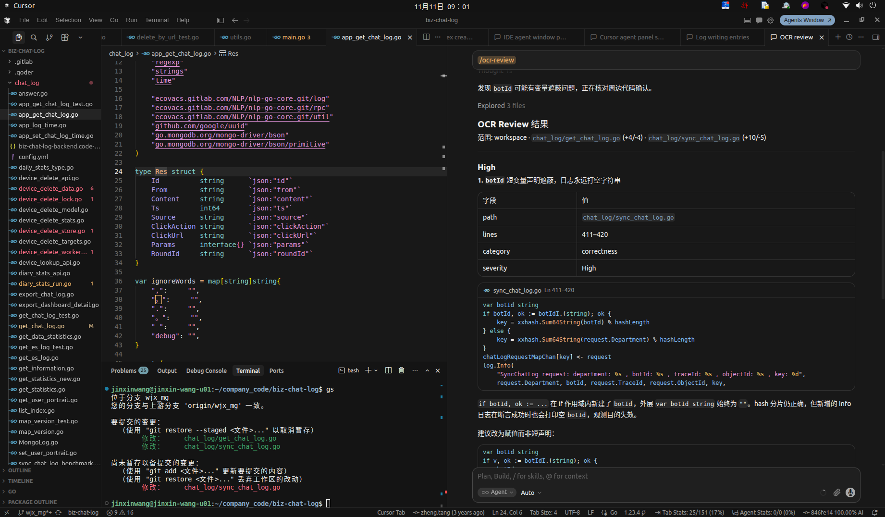

01
覆盖不全
变更集一大，Agent 会偷懒，选择性漏掉文件。看哪些文件，变成了一次自由生成。
Open Code Review 架构解析。同一模型，换一套 Harness：SEM-F1 约 2.2×，精度更高、召回更低。这是系统对照，不是模型榜。
后端 Claude-4.6-Opus。OCR v1.3.1 对 Claude Code v2.1.169。2.17× / 4.7× 来自表 3 打印值。SEM-F1、精度、召回都是语义裁判复跑五次的均值，不是审查系统复跑。正文 4,580 与表 5,980 冲突时以表为准。后文 token 与时间是每条 PR 的平均。
Li et al., OpenCodeReview, arXiv:2608.09290, 表 3 与 §4.2。arxiv.org/abs/2608.09290
不讲安装步骤与配置百科。现场若条件允许，可补跑 ocr review --preview（不花 token）。
时长按语音服务研发部门技术分享节奏估算；页脚出处全部可点。
Cursor Agent 这类通用循环，再追问一轮，往往会再翻出一批评论。文件覆盖变了，行号对不上刚才那一版，真问题和顺嘴一说混在一起。
哪些文件进入审查，由过滤器决定，不由模型当场发挥。评论若被 diff 事实直接打脸，会被拿掉；同一份 diff 再跑不会换一套审查范围（工作区若变了，diff 本身会变）。
模型可以是同一个。变的是谁来约束流程。
左栏三点来自 README「Why Open Code Review」，是产品对通用 Agent 的观察，没有 Cursor 公开评测数字。量化对照对象是 Claude Code 与 Codex。README.zh-CN.md

截图文件：同目录 talks/cursor_ocr_chatlog.png。范围：workspace · get_chat_log.go (+4/-4) · sync_chat_log.go (+10/-5)。问题：High / lines 411–420。截图徽章写 correctness；现行解析会收成 other。
path: chat_log/sync_chat_log.go。Agent 先 Thought「可能有变量遮蔽」，再 Explored 3 files，才落成评论——不是空口一说。
哈希算对了，线上日志却永远打不出真实 botId。排障依赖会话维度时，这种 bug 比 panic 更难发现。
截图徽章是 correctness。现行枚举没有这一项，模型若填它，解析会收成 other。下一节拆为什么这类结果更稳。
截图同源。OCR 行号由 existing_code 匹配产生，见工具文档「锚定算法」。tools.md
变更集一大，Agent 会偷懒，选择性漏掉文件。看哪些文件，变成了一次自由生成。
评论经常对不上真实代码。行号和文件引用会漂，读者得自己重新找位置。
Skill 和提示词用自然语言驱动，难调试。措辞一调，审查质量就跟着晃。
论文收成两件事：工具动作空间太大，跑两遍对不齐；有效上下文又常停在 diff 附近。引出三道工程题：检索污染/不够、多文件连贯与并行、幻觉评论侵蚀信任。
README 同上。论文 §1–§2：arxiv.org/html/2608.09290v2
README 提过相关文件捆成审查单元；论文图 2 与架构文档写的是每文件一个子 Agent。本页按论文与架构文档。
论文图 2、§3.1。2608.09290v2 · architecture.md
| 环节 | 谁负责 | 为什么不能混 |
|---|---|---|
| 文件筛选、噪声目录、五重门、超大 diff 拦截 | 确定性工程 | 漏看和误放不能靠模型自觉。同一份 diff，文件集应可复现。 |
| 规则匹配：临时 > 项目 > 用户全局 > 内置 | 确定性工程 | 标准先于推理。Replace / Merge 是配置，不是现场挑选。 |
| 按文件分发、上下文隔离、有界并发 | 确定性调度 | 大变更集不挤进同一上下文。默认并发 8。 |
| 读上下文、追调用、判断是否缺陷 | LLM 子 Agent | 语义只有模型能做。工具集审查专用，输出有上限。 |
| 评论行号 | 确定性匹配为主 | 模型只交 existing_code；程序匹配出行号，失败才 RE_LOCATION_TASK。 |
| 评论是否被 diff 事实打脸 | 独立 Reflector | 只判事实真假，不判价值高低。只能删，不能新写。 |
论文 §3.2–§3.4；架构文档「五重门」「评论处理流水线」「并发默认 8」。
include 未命中不排除，不是白名单。exclude/include 只取最高一层。vendor/、node_modules/、target/ 等在 diff 层剔除。超大 diff 与删除文件不派发，预览里删除标 deleted。
这一屏就是「确定性工程在干活」。截图里 OCR 只审查了两个 chat_log 文件，与过滤器结果一致。
preview.go · model/preview.go · output.go · architecture.md
| 优先级 | 来源 | 位置 |
|---|---|---|
| 1 | 临时覆盖 | --rule |
| 2 | 项目级 | .opencodereview/rule.json |
| 3 | 用户全局 | ~/.opencodereview/rule.json |
| 4 | 内置系统 | 嵌入的 system_rules.json |
规则正文按层先匹配，本层未命中才落到下一层；层内按声明顺序。命中后默认替换内置规则，merge_system_rule 才拼接。正文注入 {{system_rule}}。include/exclude 不走这条链。
review-rules.md · 论文 §3.2 Rule-Guided Dispatch
整 PR 塞进一个 Agent：上下文膨胀、信号稀释。切太碎（按 hunk）：看不到变更整体。文件级是论文选定的折中；跨文件依赖用工具按需取，不共享巨型上下文。
「3 次」只计发出了工具调用、但没有有效结果的轮次。一次调用都没解析出来时，只消耗 30 次上限。主循环里已收集的 code_comment 才会进入后处理。
architecture.md「per-file 子任务」· 论文 §3.3 Grounded File Review
读变更后文件片段（最多 500 行）。
按文件名关键字定位。
全仓 grep；有匹配上限与超时。
读另一变更文件的 diff，确认跨文件关切。
提交评论：content + existing_code + 可选 suggestion。
结束循环。Plan 阶段故意不可用。
tools.md · tools.json · 论文 Table 2
CommentWorkerPool 异步做行解析，不堵主循环。Agent.Run 返回后顶层再跑一轮 ResolveLineNumbers。
code_comment 只交片段，不交行号；报告里的 411–420 由 resolver 匹配算出。空白行容忍、CRLF、多行片段都在测试里覆盖。
tools.md「锚定算法」· resolver.go · architecture.md「评论处理流水线」
前 2 条：system + 初始 user。永不丢。
中间轮次 → XML → MEMORY_COMPRESSION_TASK → 摘要塞进 <previous_review_summary>
最近完整轮次，尽量保留在 80% 预算内。
architecture.md「记忆压缩」「token 预算守卫」· 论文 §3.3.1、§4.3
看 diff，也能用工具读文件、搜调用。评论可能依赖 diff 外上下文。
输入：该文件 diff + 评论列表。看不到工具轨迹。同一模型，信息不对称。
review_filter_task_system.md · review_filter_task_user.md · 论文 §3.4
论文 §4.2(2)、§4.4、§5(2)。arxiv.org/html/2608.09290v2
| Key | 何时 | 做什么 | 能否调工具 |
|---|---|---|---|
| PLAN_TASK | 大 diff 前 | 产出审查清单 → plan_guidance | 否（工具名纯文本） |
| MAIN_TASK | 主循环 | 探索 + code_comment | 是（六工具） |
| MEMORY_COMPRESSION_TASK | 60%/80% | 摘要中间区 | 否 |
| RE_LOCATION_TASK | 行匹配失败 | 重锚 existing_code | 否 |
| REVIEW_FILTER_TASK | 循环后 | 按 diff 证伪删评论 | 否 |
模板在 task_template.json，占位符如 {{diff}}、{{system_rule}}、{{comments}}。改 prompt 需改模板并重建——这是故意的：审查流程不靠运行时随手改一句自然语言。
architecture.md「模板与占位符」· task_template.json
diff、过滤、规则、子 Agent、行号、反射、会话落盘。模型端点可配。
插件 / Skill / 斜杠命令调用 OCR。截图是 Cursor 里 OCR Review 会话面板。
OCR 只做文件选择与规则解析；子 Agent、行号、压缩、Reflector 不跑。审查由宿主 Agent 的 LLM 承担——适合已有订阅、不想再配 OCR Key。
plugins README · 文档 Delegate / Cursor 集成
SEM-F1 的 2.17× 来自精度抬升。召回这边，OCR 更低。
表 3。Token、时间是每条 PR 平均；命中/生成是 200 PR 累计。裁判五次均值。正文 4,580 与表 5,980 以表为准。AACR-Bench
| 模型 | 系统 | SEM-F1 | Prec. | Recall | Match/Gen | 均 Token | 均时间 |
|---|---|---|---|---|---|---|---|
| Claude-4.6-Opus | OCR | 25.10% | 33.90% | 20.00% | 301/889 | 385K | 1m23s |
| CC | 11.57% | 7.23% | 28.90% | 435/5980 | 5,664K | 13m06s | |
| Qwen3.7-Max | OCR | 21.20% | 25.20% | 18.30% | 276/1096 | 625K | 4m41s |
| CC | 12.17% | 8.23% | 23.37% | 351/4260 | 5,153K | 8m06s | |
| GPT-5.5 | OCR | 21.00% | 32.10% | 15.50% | 234/728 | 422K | 2m51s |
| Codex | 8.36% | 27.82% | 4.92% | 74/266 | 525K | 2m58s | |
| Claude-4.8-Opus | OCR | 17.90% | 37.80% | 11.70% | 176/465 | 352K | 1m06s |
| CC | 14.13% | 15.93% | 12.70% | 191/1200 | 2,062K | 5m38s | |
| Deepseek-V4-Pro | OCR | 17.90% | 30.60% | 12.70% | 191/624 | 394K | 6m28s |
| CC | 10.93% | 8.27% | 16.13% | 243/2945 | 5,450K | 14m24s | |
| GLM-5.1 | OCR | 20.40% | 28.90% | 15.70% | 237/820 | 743K | 4m11s |
| CC | 11.93% | 8.37% | 20.80% | 313/3742 | 4,038K | 14m10s |
整表抄自论文表 3。均 Token、均时间是每条 PR 的平均；Match/Gen 是 200 PR 累计。17.90% 为 Claude-4.8-Opus 与 Deepseek-V4-Pro 并列。绿底 OCR；红底 Claude Code 最高 SEM-F1。
召回 301/1,505。六档 OCR 召回 11.70%–20.00%。Claude Code 召回 28.90% 时生成 5,980 条，精度 7.23%——多出来的覆盖用噪声换。
SEM-F1 不衡量可操作性与严重程度；有用但未对上标注的评论会计成假阳性。
表 3、§4.2、§4.4、§6 · rule_docs/go.md
botId / sessionId / requestId 打空，排障链断。OCR 截图正是这类正确性缺陷。
多文件小 diff（+4/-4、+10/-5）正是日常。过滤器保证相关文件进审查，不靠模型「想起来」。
语音业务迭代快。精度优先：少而准的评论，比刷屏式建议更可进 CI。
业务映射基于截图场景与架构能力的合理引申；基准数字仍仅引用 AACR-Bench / 论文表 3。
文件进不进、规则用哪条、行号落哪一行。错了无法靠「再想一想」补救，就不要交给采样。
只能删除被证据打脸的输出。不能改写成新结论。解析失败就原样保留。
让核查者看到更少。同一模型也可以；挡住自我合理化的是看不见探索过程。
对应 Rule-Guided Dispatch、filter-only、asymmetric information boundary。Claude-4.6 同模型差约 13.5 个 SEM-F1 点，大于 OCR 内部极差 7.2；Claude-4.8 同模型只差约 3.8。
在业务仓跑 ocr review --preview。核对：测试文件、生成物、二进制是否被正确排除；核心业务文件是否保留。
选类似截图的小变更（日志、同步、字段）。看评论是否有 path/lines/severity，以及 suggestion 是否可直接改。
写 .opencodereview/rule.json：会话日志必须可关联 bot/session。用 ocr rules check 确认生效。
成功标准不是「找得最多」，而是：同一 diff 两次 preview 文件集一致；假警报少到人愿意读；关键字段类问题能被规则+Agent 稳定打出。
命令见 CLI 文档与 architecture.md。安装细节留给文档，现场只演示预览更划算。
SEM-F1 差 13.5 个点（2.17×），大于 OCR 内换模型的 7.2 个点；Claude-4.8 同模型只差 3.8 个点。精度约 4.7×，召回更低（301 vs 435 条命中）。token 是每条 PR 平均，约 14.7×。能量化的是 Claude Code / Codex。
过滤、规则链、并发边界
六工具、三分区、轮次上限
片段回贴、只删不增、信息边界
数字见表 3。§7「设计大于模型」只覆盖 Claude-4.6 这类对照：不是每一档都大于换模型，也不是消融证明。
提问。现场演示建议：ocr review --preview。
欢迎从真实仓的痛点反问：哪些步骤必须确定性？哪些必须留给模型？核查层该看到什么、不该看到什么？
感谢。文件：talks/deterministic-engineering.html
← → 、空格、PageUp / PageDown。Home / End 到两端。
点击画面左缘回退，右缘前进，也可以左右滑动。链接点击不会翻页。
F 全屏。? 或 Esc 关闭说明。